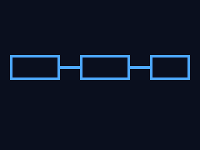

很多人分不清程序和进程，其实很简单：
打开记事本 → 系统创建一个 notepad.exe 进程。关掉它 → 进程销毁。
一个进程在系统里包含：
在 Windows 里，窗口就是一个数据结构（由系统管理），不是屏幕上画出来的图片。

Windows 是一个消息驱动的操作系统。一切皆消息：
每个线程（有窗口的）都有自己的一条消息队列。系统把消息投递到对应线程的队列中，线程不断取消息、处理、再取——这就是消息循环（Message Loop）。
卡死的本质是消息循环被阻塞了：
窗口的 Z 序决定了谁在谁上面：